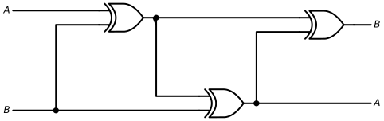
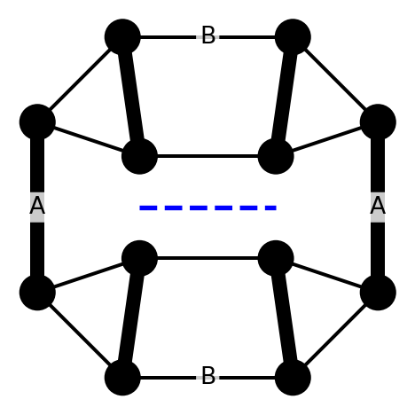
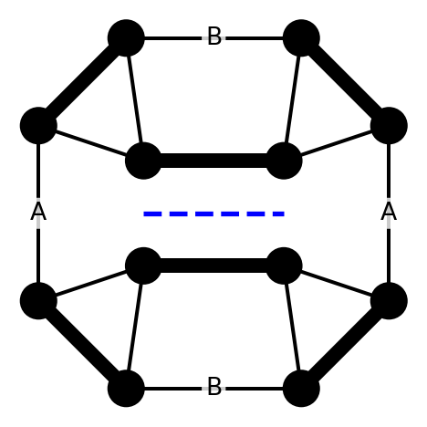
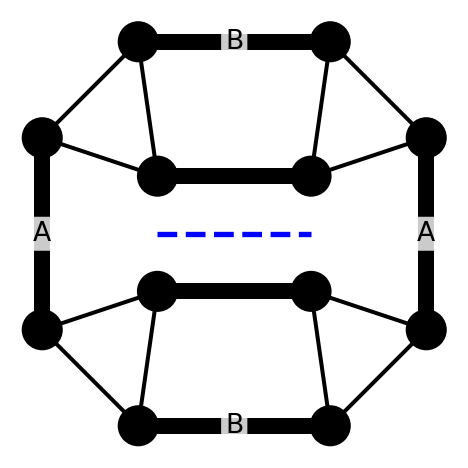
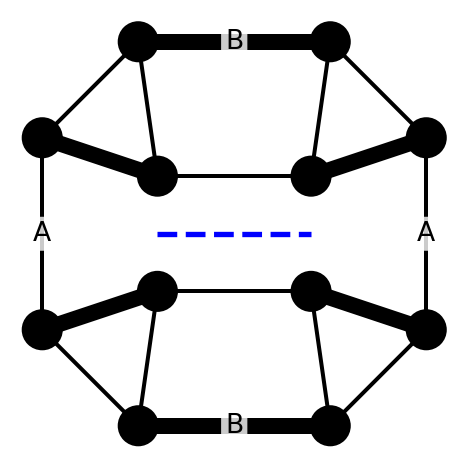
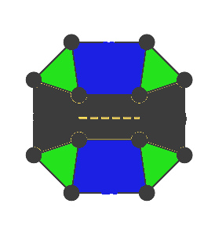
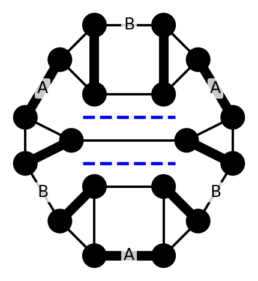
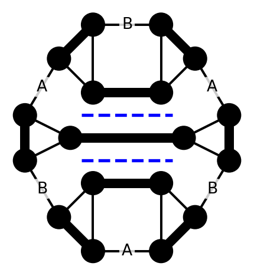
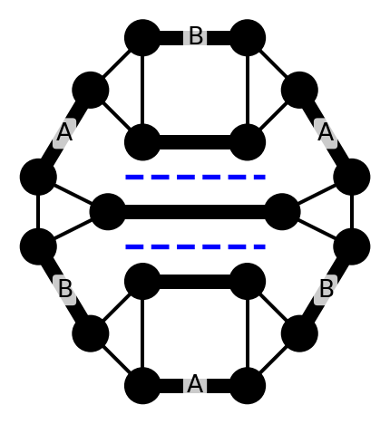
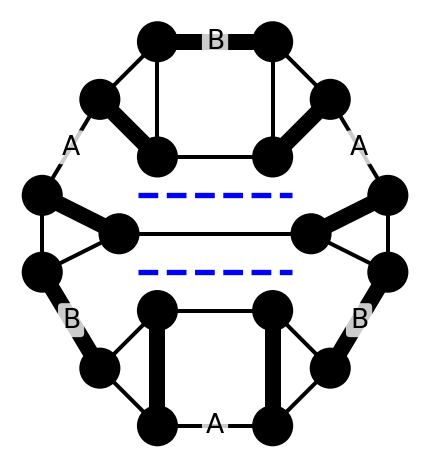

Very often in molecular processor design, circuit topologies are inherently non-planar: two independent data lines need to cross, or an interconnect must bridge across the interior of a closed molecular ring. But is a strictly 2D signal crossing even theoretically possible without physical short-circuits?
Very often in molecular processor design, circuit topologies are inherently non-planar: two independent data lines need to cross, or an interconnect must bridge across the interior of a closed molecular ring.
One natural solution is to deploy three-dimensional architectures using vertical \(\pi\)-stacking couplers (layering conjugated rings on top of one another).
However, when exploring an emerging technology, simplicity is paramount: keeping the entire fabric strictly two-dimensional avoids complex multi-layer synthesis.
But is a strictly 2D signal crossing even theoretically possible without physical short-circuits?
The Cellular Automata Precedent: The 3-XOR Trick
In the domain of 2D cellular automata, this wire-crossing problem was solved long ago. It relies on the famous 3-XOR SWAP trick:
\[\begin{aligned}
A_1 &= A \oplus B \\
B' &= B \oplus A_1 = B \oplus (A \oplus B) = \mathbf{A} \\
A' &= A_1 \oplus B' = (A \oplus B) \oplus A = \mathbf{B}
\end{aligned}\]
By cascading three XOR operations, the identities of two variables are swapped in-place without requiring any temporary intermediate storage:
Code
# Initialize schematic drawing for the 3-XOR SWAP circuitwith schemdraw.Drawing() as d: d.config(fontsize=12, unit=2.5)# Vertical coordinates for the two data rails y_a =2.75 y_b =0.0 x_in =0.0# ==========================================# 1. Place the 3 XOR Gates in Cascade# ==========================================# Stage 1: XOR on line A (A1 = A XOR B) xor1 = d.add(logic.Xor().right().at((3.0, y_a +0.25)))# Stage 2: XOR on line B (B' = B XOR A1 = A) xor2 = d.add(logic.Xor().right().at((6.5, y_b)))# Stage 3: XOR on line A (A' = A1 XOR B' = B) xor3 = d.add(logic.Xor().right().at((10.0, y_a)))# ==========================================# 2. Stage 1 Connections (A1 = A XOR B)# ==========================================# Input A straight to xor1 in1 d.add(elm.Line().at((x_in, y_a +0.5)).to(xor1.in1).label("$A$", loc="left"))# Input B line d.add(elm.Line().at((x_in, y_b -0.25)).to((1.5, y_b -0.25)).label("$B$", loc="left")) d.add(elm.Dot().at((1.5, y_b -0.25)))# Tap B up into xor1 in2 d.add(elm.Wire("|-").at((1.5, y_b -0.25)).to(xor1.in2))# ==========================================# 3. Stage 2 Connections (B' = B XOR A1)# ==========================================# Continue line B to xor2 in2 d.add(elm.Line().at((1.5, y_b -0.25)).to(xor2.in2))# Line A1 from xor1 out towards xor3 d.add(elm.Line().at(xor1.out).to((5.0, y_a))) d.add(elm.Dot().at((5.0, y_a +0.25)))# Tap A1 down into xor2 in1 d.add(elm.Wire("|-").at((5.0, y_a +0.25)).to(xor2.in1))# ==========================================# 4. Stage 3 Connections (A' = A1 XOR B')# ==========================================# Connect A1 line to xor3 in1 d.add(elm.Line().at((5.0, y_a +0.25)).to(xor3.in1))# Line B' from xor2 out towards output d.add(elm.Line().at(xor2.out).to((8.5, y_b))) d.add(elm.Dot().at((8.5, y_b)))# Tap B' up into xor3 in2 d.add(elm.Wire("|-").at((8.5, y_b)).to(xor3.in2))# Final Output B' (which carries the original value of A) d.add(elm.Line().at((8.5, y_b)).to((12.5, y_b)).label("$A$", loc="right"))# Final Output A' (which carries the original value of B) d.add(elm.Line().at(xor3.out).to((12.5, y_a)).label("$B$", loc="right"))

The Protobit Analog
Remarkably, there exists a direct, native molecular equivalent for protobits that achieves planar signal crossing.
Here is the Octagonal 2D Bridge:
To a classical intuition, watching this happen looks almost like magic: two independent logic signals intersect within the same physical carbon ring without interfering with one another.
This is neither quantum tunneling nor long-distance teleportation. Rather, the delocalized \(\pi\)-electrons behave like non-interacting optical solitons (or transverse photon modes). The signals pass straight through each other as smoothly as two intersecting laser beams crossing in free space.
Now, let us examine the global resonance structures. As the simulation below confirms, whatever logical state enters along path \(A\) or path \(B\) exits cleanly at its respective opposite terminal:
Code
all_resonances = mol.resonance()for i, res_mol inenumerate(all_resonances): res_mol.draw()




Ironically, an urban cartographer looking at the skeletal drawing of the octagonal molecule would instinctively assume they are looking at the standard map symbol of a bridge crossing a river:

Yet the physical mechanism is entirely unique: there is no upper deck and no lower tunnel. The crossing happens within the exact same single atomic plane.
Hexagonal Grids: The Dodecagonal Bridge
While the Octagonal Bridge integrates naturally into square or rectangular Manhattan-style circuit layouts, hexagonal lattices (such as graphene sheets) demand higher rotational symmetry.
For these architectures, we can engineer a Dodecagonal 2D Bridge. In addition to performing planar crossing, its expanded geometry natively supports fan-in and fan-out routing across terminals:
Here are its resonance states, confirming that signals introduced at either boundary \(A\) or \(B\) propagate strictly to their targeted outputs without cross-contamination:
Code
all_resonances = mol.resonance()for i, res_mol inenumerate(all_resonances): res_mol.draw()




The Architectural Verdict
Through these planar bridges, every bond of a complex carbon network becomes topologically routable without leaving the 2D plane.
While multi-layer 3D fabrication offers denser volumetric integration, 2D planar bridges provide a massive manufacturing advantage: they allow an entire quantum molecular processor to be synthesized on a single, atomically thin monolayer sheet.
Speculations & Wild Thoughts
The Coupler Mystery
Across all my explorations, I have never succeeded in designing a working 2D bridge that functions without at least one Coupler.
The non-contact inductive coupling seems strictly necessary for the two paths to slide past one another.
I strongly suspect that a coupler-free 2D bridge may be a topological impossibility within pure \(sp^2\) carbon chemistry.
However, if you happen to discover a valid 2D bridge topology that operates cleanly without any couplers, please reach out in the comments below! Such a discovery would provide profound new clues regarding the ultimate boundary limits of Protobits.
 Speculations & Wild Thoughts
Speculations & Wild Thoughts